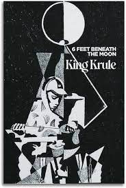
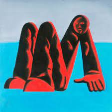
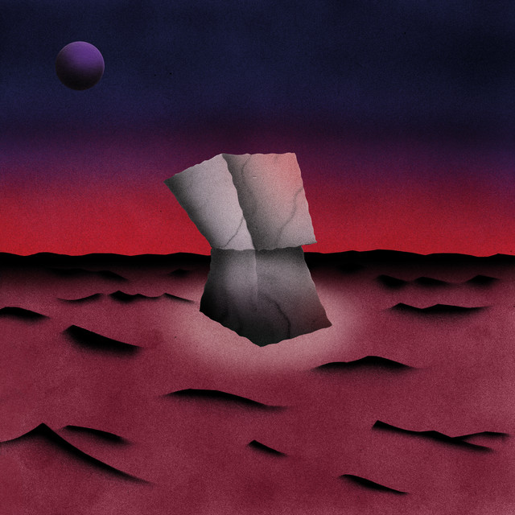

King Krule é o nome artístico de Archy Ivan Marshall, um músico, cantor e compositor britânico. Ele nasceu
em 24 de agosto de 1994, em Londres, Reino Unido. King Krule é conhecido por sua música que incorpora uma
variedade de estilos, incluindo o rock, punk, jazz e elementos de música eletrônica. Seu estilo musical é
muitas vezes descrito como uma fusão única de gêneros.

6 Feet Beneath the Moon
O álbum de estreia de King Krule, "6 Feet Beneath the Moon", foi lançado em 2013 e recebeu elogios da
crítica. Ele é conhecido por sua voz distintiva e única, que é muitas vezes caracterizada por tons graves.
Suas letras são frequentemente introspectivas e poéticas.
"The Ooz" recebeu aclamação crítica significativa por sua originalidade, atmosfera sombria e as letras
introspectivas de King Krule. O álbum explora temas como a alienação, o isolamento e as complexidades das
relações interpessoais. A voz profunda e distintiva de King Krule é uma característica marcante em suas
músicas, e "The Ooz" é considerado uma evolução significativa em sua carreira musical.
The Ooz


Man Alive!
"Man Alive!" é o terceiro álbum de estúdio do músico britânico King Krule (Archy Ivan Marshall). Foi lançado
em 21 de fevereiro de 2020. Assim como seus trabalhos anteriores, "Man Alive!" recebeu elogios críticos por
sua originalidade e pela habilidade de King Krule de mesclar diferentes estilos musicais.
O álbum abrange uma variedade de gêneros, incluindo jazz, punk, rock e música eletrônica, refletindo a
abordagem eclética de King Krule à música. Suas letras são frequentemente introspectivas e líricas,
explorando temas como a alienação, a ansiedade e as complexidades da vida moderna.
Segundo Marshall, o trabalho busca inspiração no conceito de “espaço entre” e as pequenas angústias geradas
pelos desencontros, lento afastamento entre os indivíduos e a inevitabilidade da passagem do tempo. São
oscilações poéticas que funcionam como um mergulho na mente do próprio compositor, mas que em nenhum momento
deixam de se relacionar com o ouvinte, efeito do lirismo inquietante do artista inglês. “Ele está segurando
o peso do mundo“, repete na introdutória Flimsier, indicando parte da forte carga emocional e tormentos que
orientam a experiência do público durante toda a execução da obra.
Space Heavy
